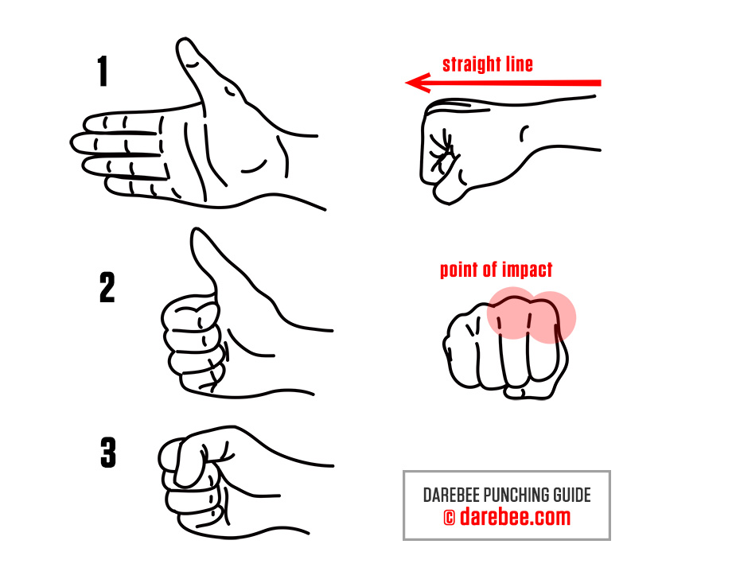

Guide to Punching
The hand is probably the most versatile part of our body. Tool and weapon in equal parts it is no surprise to discover that it has actually evolved, over thousands of years, to form a punch and hit a target. Sure, its shape and opposable thumb give it dexterity that allows us to do things like work a wrench and play the guitar but, the argument goes, there are several different possible variations in its proportion that could allow us to do that, but only one that would allow it to be both tool and weapon.
To understand exactly why all you have to do is clench your fist hard and look at the back of it from above. What do you feel and what do you notice? As you clench your fist tightly you can actually feel all the delicate bones of your hand pulling tightly together. The tendons shortening so that the fist suddenly becomes harder as a structure, more stable. Then, as you look at the back of your closed fist from above you notice that not all knuckles are equal. The knuckle that’s at the base of your index finger (also known as the second meta-carpo-phalangeal (MCP), sticks out a little more than the rest.
The effect is known as buttressing (support) and the way the knuckles stick out when the hand is clenched hard to form a tight fist, along with the shortening of all the other tendons is designed to increase the punching power of the fist at the point of impact while protecting the delicate bones of the hand.
A study carried out by researchers Utah showed that while the amount of power delivered to a target with the open palm is the same as that delivered with a clenched fist the amount of measurable power delivered at the point of impact per square millimeters of surface increased considerably. It also doubled the ability of the proximal phalanges (the bones of the fingers that articulate with the MCP joints) to transmit a punching force.
The increase in power delivered is understandable. As the surface area we strike with shrinks the amount of power that goes through it also increases. It’s a bit like having your foot stepped on by accident by 150lb person wearing sneakers and then the same person stepping on you accidentally wearing high heeled boots. The pain you will experience and the damage you will suffer when the latter happens is amplified manifold because the force that is applied is now concentrated on a very small area of your foot.
When it came to punching however what was surprising in regards was that the clenched fist strengthened the ability of the bones connected to the knuckles to transmit punching force which means that with our fists clenched we simply strike harder because we know we can strike harder and get damaged less.
This also explains why boxers wrap their hands before they put on boxing gloves. A good handwrap tightens up around the hand when the fist is clenched adding extra buttressing and allows the boxer to strike harder without running the risk of injuring his hands.
So, now that we know that our hands evolved to be these incredible weapons, how do we actually use them to maximum advantage?
How to Form a Fist
While most of us know how to form a fist, understanding the reasons behind a proper fist will help us avoid making mistakes that lead to injuries. The principle of forming a proper fist can be summarized in one word: alignment. Basically you want to make sure that everything is aligned both internally and externally to allow you to deliver the maximum striking force, safely.
You can transform your hands from delicate instruments to powerful weapons in four easy steps:
- Hold your hand out like you would for a handshake, palm open, thumb pointing towards the ceiling.
- Now fold the extended fingers of your hand towards the center of your palm, but keep your thumb pointing towards the ceiling. Make sure that your fingertips are buried in the middle of your palm.
- Now fold your thumb in tightly, over your fingers, until the ball of your thumb touches the middle joint of your index finger (called interphalangeal joint or IP for short). You now have a perfectly formed fist, but we are not finished yet.
- Next, turn your hand ninety degrees so that your thumb is looking towards the ground. Make sure that there is a perfectly straight line between your forearm and the end of your fist. To test this hold your arm perfectly straight in front of you and check to see that this is indeed so by sighting along it. You will most probably have to move your hand slightly downwards to achieve that and then, slightly outwards to make sure that its most prominent point when it’s in a clenched fist are the first two knuckle joints.

That’s it. You now have formed not just the perfect fist but also have aligned the muscles of the forearm and the tendons of the wrist and have made sure that the metacarpal bone and the delicate bones of the fingers are protected from stress fractures and impact damage, respectively. The tightness of the fist also protects the bones of the hand from the stress forces that are generated when we punch.
Measurements carried out by the University of Utah researchers using the arms of cadavers found that when we have a properly formed fist we can punch with twice the force than if we used the open palm.
Punching Technique
Forming the perfect fist is only half the battle of course. We also need to know how to punch. Here the variations are a lot broader and range from the rapid-fire short punches of American-Football to the hip-thrown, twisting punches of Karate and the structurally strong cross and hook punches of Boxing.
There are two things to remember here that are important. First, that all punches are designed to do the same thing: get the clenched first that is at the end of our arm to a target that is within reach of us. Second, not all punches are intended to have the same effect. Some punches are considered harder than others for reasons we will get to later. Some punches are finishing punches intended to knock an opponent out or damage him significantly while other punches are sounding punches, used to keep an opponent busy and create an opening for a stronger, follow-up attack. The difference between each is in what we call ‘structure’ which we will also cover a little further down.
Irrespective of which punch you decide to throw or what you intend it to do two things will hold fast. First, there will be some sort of twisting motion taking place as your fist goes from a position where the inside of your wrist is facing you (or looking to your side) to one where your arm is outstretched, the forearm and wrist aligned and perfect straight, the two front knuckles the foremost striking point. Second, the power of your punch will always depend upon the amount of bodyweight you have been able to move and the speed you have been able to move it at, while punching.
A truly powerful punch is the haymaker which looks a little like someone throwing a shotput, except they throw a punch instead. It rarely works however because despite its power it is such an obvious punch with so much body movement and a long travelling distance that it is easy to evade. There is little purpose in throwing a punch if it is so obvious that it will never connect with its intended target.
Every punching technique then tries to find the optimal distance between ourselves and the target while still holding the arms back enough to allow for some travelling distance and the building up of power and deliver it at sufficient speed to actually hit the target before it escapes. That means that the nearer we have placed our fists to a target the softer the punch is going to be. The exception to this rule is Bruce Lee’s famous one-inch punch which we shall return to below.
So, in order for a punch to be strong it needs to:
- Engage as many muscle groups as possible. Aligned muscle groups add to and amplify each other’s strength. In the early days of boxing, boxers fought with bare knuckles. To protect their hands from damage they kept their clenched fists in front of them, with the inside of the forearm facing them and they flicked them out towards the opponent, using the first two, prominent knuckles to strike with. This is a movement that uses the biceps and shoulder and flicks the arm out as the elbow joint opens and closes. It is therefore a relatively weak punch. Modern boxers hold their fists in front of them, usually with the inside of the forearms facing each other and they twist their arms when they punch. This engages the deltoid, trapezius, triceps, elbow joint, forearm muscles and wrist tendons making the punch way harder and that’s before we even consider the bodyweight that is added to this by the rotation and commitment of the upper body, through the pelvic girdle muscles and the contribution made to the movement by quads and calves.
- Employ as much of the body’s weight as possible. This is pure physics. The more of the body’s weight that can be placed ‘behind’ the punch the heavier that punch will be. This is also why heavier people have naturally harder punches.
- Use as much push off the ground as possible. If you are suspended in space or floating in water it is impossible to punch hard. That’s because of Newton’s third law of motion which states that every action has an equal and opposite reaction. When you punch hard and you are suspended in midair (or in water) the same force with which you punch, is also pushed back into your own body. Without your legs being connected to the ground and pushing off it, there is no way to generate any meaningful force in the direction that you are punching towards.
What makes a punch powerful?
When it comes to having powerful punches physics again kicks in. Power is mass x acceleration. A powerful punch is always a combination of how quickly the arm will move, how much of the body’s weight can be committed to the punch by pushing off the ground with the legs and how all this is synchronized.
Usually the longer a punch travels to reach its target the greater acceleration it can achieve and the more commitment in terms of the body’s weight can be placed behind it. That’s why the boxer’s jab, delivered with the hand nearest the opponent is fast but cannot be very powerful while the cross, which is delivered by the hand held further back is always way more powerful as a blow.
One exception to this very obvious rule is Bruce Lee’s famous one-inch punch which we mentioned earlier in the article. Bruce Lee trained himself to synchronize his muscles and move his body explosively when he punched. So although he was about an inch away from his target (which is where the punch gets its name from) he was still able to deliver a heavy blow thanks to the acceleration of his whole body that he could achieve. Because Bruce Lee had trained himself to synchronize of all his muscles so that the power generated from his legs could travel up his torso and explode in his fist and the commitment of his body he was able to generate a lot of power using the mass x acceleration equation, of physics.
Basically he was able to move his entire body very explosively which made his punches way heavier than they should realistically have been.
Here are the elements which make a punch powerful:
- Strong legs – to help push off the ground
- Strong abdominals – to help transmit the power from the legs to the upper torso
- Good upper body strength – to help punch hard and fast in the first instance
To see how this works we will consider here a straight punch, as opposed to a hook or an uppercut or a backfist. A straight punch like the jab or the cross are very common punches and amongst the easiest to throw. It is powered by:
- Deltoids
- Triceps
- Chest
- Trapezius
Boxers do a lot of push ups and pulls ups which strengthen these muscles so they can have stronger punches. But then they also do a lot of squats, running, jogging, sprinting and skipping as well as ab work.
To truly make a punch hard beyond strong punch delivery muscles, they also need:
- Strong quads – to power their upper body as it twists into the punch.
- Powerful calves – to push off the ground.
- Great abs – to smoothly transfer power from the lower body to the upper one.
Plus because a punch, as we saw above relies on mass and acceleration a really strong punch also requires:
- Good limb speed – the arms have to be able to move explosively fast.
- Explosive leg work – heavy hitters are able to push off the ground with their calves really fast.
This principle of a powerful punch is the same regardless if you are looking at, let’s say a boxer’s cross or a martial artist’s traditional hip punch. While the boxer requires a more upper body commitment with his cross punch, the martial artist requires a greater torso rotation with his hips in order to power the hip punch.
This is where we get the notion of ‘structure’ in punches. Essentially, a punch is made up of all the muscle groups that are recruited in order to power it. A quick jab for example may only make use of three muscle groups (Deltoids, Triceps and Chest muscles) and it is relatively a structurally weak punch. A hook on the other hand may use Deltoids, Triceps, Biceps, Lats, Abs, Glutes, Quads and Calves all of which make it a structurally stronger punch. The more structurally strong a punch is the harder it is to defend against. A jab, for example may be blocked but a hook needs to be evaded.
Benefits of Training with Punches
Because punches recruit so many muscle groups learning to throw a proper punch is a great way of getting fit. Shadow boxing, for example, where multiple punches are thrown at an imaginary target in midair is a great way to condition the muscles and improve aerobic fitness and increase endurance.
One of the most common complaints voiced by beginners is that they fail to feel anything much when they throw punches. That is to be expected for three reasons:
- First, in the beginning punching muscles are relatively weak and have not been trained so there is not a lot of muscular activity going on when punches are thrown.
- Second, because it’s early stages there is not a lot of synchronization going on in the muscle groups so punching feels both easy and not very powerful.
- Third, the lower body is not yet engaged at this stage.
All of these come later. The more you throw punches the stronger your arms and shoulders get and the stronger they get, the more muscles they begin to engage. So basically repetitive punching is one of the most tried and tested ways of building punching power by gradually increasing the structural makeup of the punches we throw.
If along with the punching we also add some footwork like bouncing on the spot and moving from side to side then we will find that we get a total workout just by shadow boxing for twenty minutes.
This is the kind of physical activity that builds lean, functional, powerful muscles, increases endurance and improves aerobic performance.
If you happen to have a heavy bag around you can also put it to good use to help you develop powerful punches. While shadow boxing is great for developing punching speed and great form, a heavy bag helps in developing structurally powerful punches and synchronized muscles. The heavy bag absorbs the force of each blow and sends a powerful feedback wave travelling back up the muscles of the arm, shoulder, back an abs. This doubles the load of the workout on your arms and body and introduces a heavy endurance component to your training.
Heavy bag training is great for building strength, denser, harder-working muscles and improving balance, coordination, aerobic performance and endurance.
Training for Stronger Punches
If we are serious about increasing the power of our punches and also, in the process, taking our fitness to a new level we need to:
- Do fast, deep push-ups, engaging the triceps, chest, deltoids and trapezium muscles in full motion, explosive movements.
- Do fast, full-motion sit ups.
- Work our obliques with twisting sit ups and our core with planks.
- Work our glutes with squats and work our lower back with back extensions.
- Work our quads with squats and work out calves with skipping rope and bouncing on the spot.
At the same time we will need to do some running to help all these different muscles work smoothly together.
When we see just how many muscles are involved in punching we begin to understand why boxers command such respect and have such structurally strong (i.e. heavy) punches and why it takes so much time and effort to begin to feel the effects and benefits of punching training. When we can throw a structurally strong punch however, we also have the means to exercise and get fit no matter where we are.